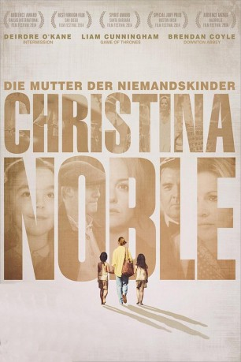
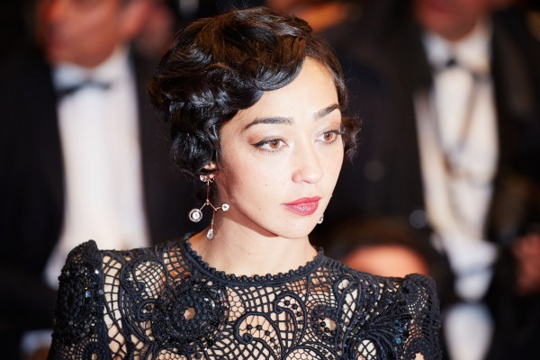
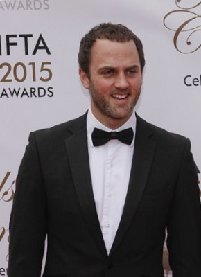
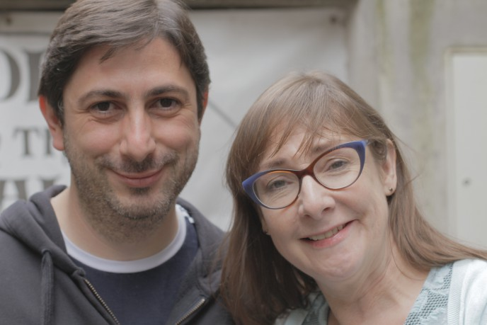

#5508 Christina Noble - Die Mutter der Niemandskinder
Alternativ: Noble
Auszeichnungen: 5 BAFTA-Awards gewonnen
 
 IMDB-Wertung: 6.7 / 10
IMDB-Wertung: 6.7 / 10  Metascore: 0
Metascore: 0 
1955 wächst die kleine Christina (Cramer Curtis) in Armut in Dublin auf. Nachdem ihre Mutter stirbt, schafft ihr alkoholkranker Vater es nicht, die Familie zusammenzuhalten, was aber Christinas Enthusiasmus nicht dämpft. Sie ist ein fröhliches Kind, das den Traum hat, Sängerin zu werden. Schließlich wird sie in die Obhut von Nonnen in Galway gegeben. Bis 1989 soll sich ihr Leben jedoch gänzlich verändern. Vierzehn Jahre nach dem Vietnamkrieg reist Christina Noble (nun Deirdre O'Kane) nach Ho Chi Minh City (früher Saigon). Berührt vom Leid zahlreicher obdachloser und verwaister Kinder in den Straßen fasst die Irin den noblen Entschluss, sich für die Schwachen und Armen der Gesellschaft einzusetzen. Mit ihrem Engagement verändert sie schließlich nicht nur das Schicksal tausender Menschen, sondern verarbeitet gleichzeitig auch ihre eigene Vergangenheit...
Jahr: 2014
Dauer: 100 Minuten
FSK: 12
Land: England Studio: Gerth MedienTonspuren: DTS - ,
Untertitel: Deutsch,
Auflösung: 720p (1280x536) Größe: 4382 MB
Genre: Drama, Biographie
Regisseur: Stephen Bradley
Drehbuch: Josh Appignanesi
Soundtrack:
Darsteller:
- Deirdre O'Kane als Christina Noble
 Sarah Greene als Middle Christina
Sarah Greene als Middle Christina Brendan Coyle als Gerry Shaw
Brendan Coyle als Gerry Shaw Liam Cunningham als Thomas
Liam Cunningham als Thomas-  Ruth Negga als Joan
-  Mark Huberman als David Somers
- Gloria Cramer Curtis als Young Christina
- Paul Hickey als Father O'Leary
- Frank Laverty als Garda
-  Pauline McLynn als Mother Superior
- Eva Birthistle als Sister Laura
- Jane Hamlet als Opera Singer
- David Mumeni als Mario
- Glenn Speers als Stonemason
- Paul J. Dove als Chip Shop customer , uncredited
- Alexander Holly als Chip Shop Customer , uncredited
- William Willoughby als Criminal , uncredited
- Nhu Quynh Nguyen Linh als Madame Linh
- Kinh Quoc als Trung
- Le Ngoc Tu'o'ng als Phan Receptionist
- Lu'o Ng My als My An
- Dat Khou Nguyen Tien als Lam
- Lauren Malone als Kathy
- Harry Whelehan als Andrew
- Charlie Whelehan als Johnny
- Derbhle Crotty als Annie
- Harry Plummer als Michael
- Camille Byrne als Philomena
- Christine Dalby als Mrs. Kelly
- Mark Blundell als Mr. Spoons
- Andrew Bennett als Dicky Clark
- Jonathan White als Judge
- Pauline Jefferson als Sister Assumpta
- Aisli Moran als Mildred
- Rachael Kearney als Sister Agnes
- Kara Ardiff als Chipper Waitress
- Jonathan Bonnici als Tito
- Margi Clarke als Guesthouse owner
- Adriana Cramer Curtis als Young Christina double
- Peter Gowen als Mr. O'Reilly
- Luke Griffin als Mr. Brenan
- Molly Gromadzki als Mario's Lover
- Sidney Livingstone als Fred Holden
- Toni O'Rourke als Angela
- Karl Shiels als Driver
- Graham Burton als Guninness Brewery Barrel Loader , uncredited
- Will Chambers als Singing Drunk / Dog Walker , uncredited
- Jim Hajicosta als Businessman #1 , uncredited
- Alan Wyn Hughes als Drunk , uncredited
- Lewis James als Courtroom Guy , uncredited
Datei: X:\2014(A-F)\Christina Noble - Die Mutter der Niemandskinder (2014, FSK12, 1280x536).mkv seit 13.02.2017
Festplatte: HD 2013(I-Z)-2014(A-Z)
 Es gibt insgesamt 119 Filme in der Gruppe '2014(A-F)'
Es gibt insgesamt 119 Filme in der Gruppe '2014(A-F)'